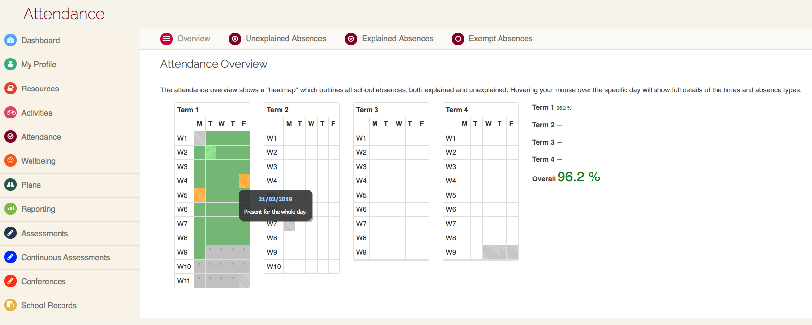
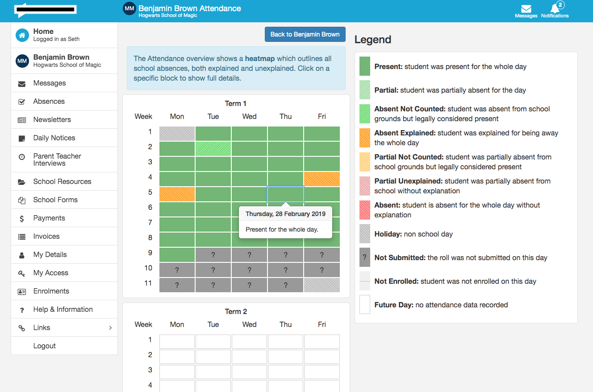
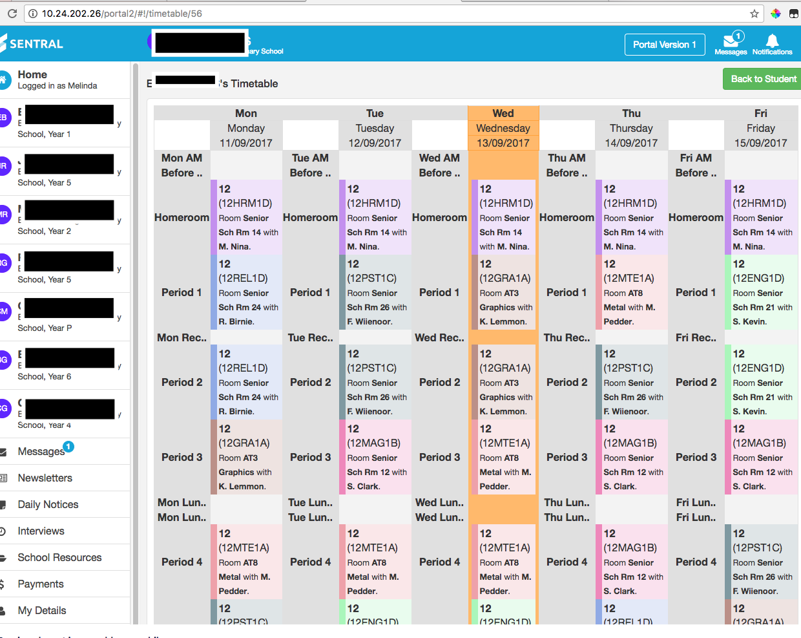
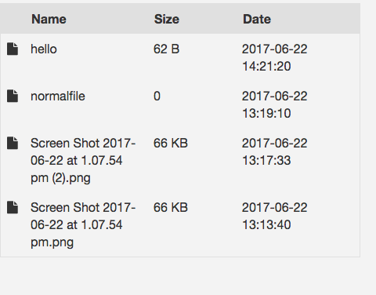

Using Angular I created features and UI/UX improvments for the website version for a module.
(This didn't work on mobile)
Added it to the new module and made it responsive, with extra features.
(This also didn't work on mobile)

Added it to the new module and made it a list.
The json data had so many nested for loops which needed to be remapped.
In other words, it was a pain!
(They clearly didn't have any UX/UI designers on the team)

When I saw the JIRA ticket assigned to me, the description
was literally a few words: "Make it look like dropbox".
These days I would push back on such requirements,
but when I was a junior developer I was able to redesign the UX/UI and deliver anyway.